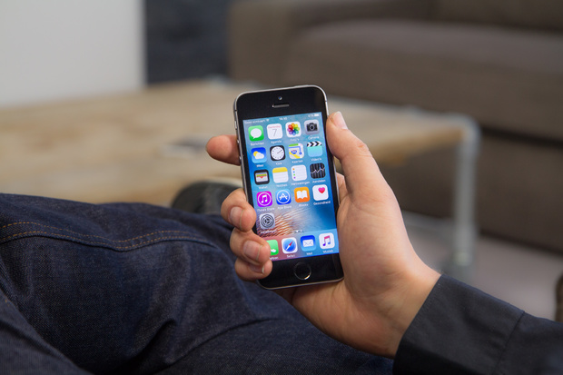

nieuws 1
Google implementeert hdr-ondersteuning bij YouTube op specifieke apparaten Door Mark Hendrikman, maandag 7 november 2016 20:37, 17 reacties • Feedback YouTube ondersteunt nu hdr-videobeelden. Gebruikers kunnen per direct hdr-beeldmateriaal uploaden naar de bekende videodienst van Google. Kijkers die de juiste hdr-capabele hardware in huis hebben, kunnen eveneens per direct de beelden met verrijkte kleuren gaan kijken. YouTube spreekt er op zijn blog van dat 'per direct naar hdr-beelden gekeken kan worden op ondersteunde apparaten, zoals hdr-tv's met de nieuwe Chromecast Ultra en binnenkort ook alle Samsung suhd- en uhd-tv's uit 2016.' Op dit ogenblik lijkt het dus alleen mogelijk om hdr-YouTubebeelden te kijken met de Chromecast Ultra en een hdr-capabele tv. Verder stelt YouTube dat 'naar gelang er meer hdr-capabele apparaten op de markt komen, YouTube met zijn partners het streamen van de hdr-versies van video's mogelijk maken.' Het is dus niet zo dat iedere hdr-capabele televisie nu YouTube-video's met hdr kan afspelen. YouTube en de fabrikant moeten dat dus eerst onderling regelen. Wie een ondersteunde hdr-capabele televisie heeft staan kan direct de functionaliteit uitproberen met een afspeellijst die YouTube in samenwerking met enkele makers heeft samengesteld. Wanneer alles in orde is en de beelden in hdr worden weergegeven, zien gebruikers een hdr-logootje bij de bediening van de video. Video's die in hdr geüpload worden naar YouTube worden nog wel gewoon in sdr getoond aan gebruikers zonder de nodige hardware. YouTube heeft wat documentatie over het proces online gezet. Hdr, of high dynamic range, zorgt ervoor dat er tussen donkere en lichte delen van het scherm meer contrast ontstaat. Lichte delen worden fel weergegeven zonder dat er detail verloren gaat in de donkere gedeeltes. De introductie van hdr op YouTube is al eerder gepland en gaat min of meer gepaard met de release van de ChromeCast Ultra, die op 8 november verkrijgbaar zal zijn. Deze heeft naast hdr ook ondersteuning voor 4k-resoluties. Ook Netflix en Amazon Prime hebben tegenwoordig ondersteuning voor hdr bij specifieke materialen.
nieuws 3
Qualcomm bevestigt bestaan vermoedelijke OnePlus 3T met Snapdragon 821 Door Arnoud Wokke, maandag 7 november 2016 19:44, 19 reacties • Feedback Submitter: AnonymousWP Chipontwerper Qualcomm heeft bevestigd dat er een apparaat van OnePlus aankomt met een Snapdragon 821-soc aan boord. Bovendien lijkt de klantenservice het bestaan van de OnePlus 3T te bevestigen tegenover een tweaker. Qualcomm noemt specifiek de Snapdragon 821-soc in een openbare tweet, die duidelijk met medeweten en toestemming van OnePlus online moet zijn gezet. Er gaan al wekenlang geruchten over een variant van de OnePlus 3 met een Snapdragon 821-soc. De klantenservice van OnePlus zegt in een gesprek met tweaker AnonymousWP tot twee keer toe dat het niet kan zeggen wanneer de 3T precies uitkomt. In het eerste antwoord noemt de klantenservicemedewerker de telefoon bij naam, de tweede keer alleen dat hij niet kan zeggen wanneer het toestel precies op de markt zal komen. Anderhalve week geleden hintte smartphonelekker Evan Blass er al op dat er een 3T zou komen van OnePlus. Het is onbekend wat precies de wijzigingen zullen zijn ten opzichte van de OnePlus 3, die deze zomer uitkwam. Dat toestel is sinds de release al enige malen slecht verkrijgbaar geweest. Dat doet vermoeden dat een van de componenten slecht leverbaar is. Dat ligt in lijn met het gerucht dat OnePlus in de 3T het oledscherm verruilt voor een lcd. De laatste geruchten wijzen op een presentatie van de 3T over een week.
nieuws 3
Versie 2.0 van Android Auto komt ook naar Android-smartphones Door Mark Hendrikman, maandag 7 november 2016 18:36, 49 reacties • Feedback Google gaat Android Auto beschikbaar maken op smartphones. Tot op heden kon de interface alleen gebruikt worden in daarvoor uitgeruste auto's. De applicatie zal in de eerste instantie alleen verspreid worden in landen waar Android Auto al beschikbaar is. De Benelux valt daar niet onder. Google zegt met de stap de miljoenen consumenten tegemoet te willen komen die geen Android Auto-compatibele voertuigen hebben. Hoewel zowel de bestaande als deze nieuwe versie van Android Auto officieel beperkt is tot markten in Duitsland, Spanje, Italië, Oostenrijk, Zwitserland, Frankrijk het Verenigd Koninkrijk en nog ongeveer 20 landen wereldwijd, betekent dit niet einde oefening voor geïnteresseerde lezers. Google doet de aankondiging op maandag en op diezelfde dag is de apk-file ook verschenen op apkmirror.com. De smartphoneversie van Android Auto vereist Android 5.0 of nieuwer. De app ondersteunt muziekplayback via Spotify, Pandora en Google Play Music. Daarnaast valt met de app gemakkelijk Google Maps te bedienen met de extra grote interface. Via stemcommando's, die Google zegt de komende tijd nog uit te breiden, kunnen telefoontjes gepleegd worden en berichten verstuurd worden. Ook kan de app ingesteld worden om automatisch te starten wanneer er via bluetooth verbinding gemaakt wordt met een auto. Volgens Google zijn er inmiddels meer dan 200 verschillende automodellen van 50 merken uitgerust met Android Auto.
nieuws 4
Gerucht: Apple komt volgend voorjaar niet met opvolger iPhone SE Door Arnoud Wokke, maandag 7 november 2016 09:21, 173 reacties • Feedback Apple zou volgend voorjaar niet komen met een opvolger voor zijn iPhone SE. Dat zegt analist Ming-Chi Kuo, die in het verleden heeft bewezen vaak van tevoren over juiste informatie te beschikken. Over het algemeen komt Apple een jaar na de release van een iPhone met een opvolger. Apple zou de iPhone SE geen opvolger willen geven, omdat het minder verdient aan de kleine telefoon en het kannibaliseert op verkopen van zijn grotere en duurdere modellen. Door het ontbreken van een update voor de SE verwacht Kuo dat Apple minder iPhones zal leveren in het eerste half jaar van 2017 dan het in 2016 in dezelfde periode deed. De iPhone SE is de laatste high-end smartphone in zijn formaat, ongeveer 13x6cm, en heeft het ontwerp van de oudere iPhone 5S uit 2013 maar met nieuwe componenten en een grotere accu. De telefoon kreeg de laagste adviesprijs voor een iPhone tot nu toe: 489 euro. De goedkoopste variant van de iPhone 7 kost 769 euro.
